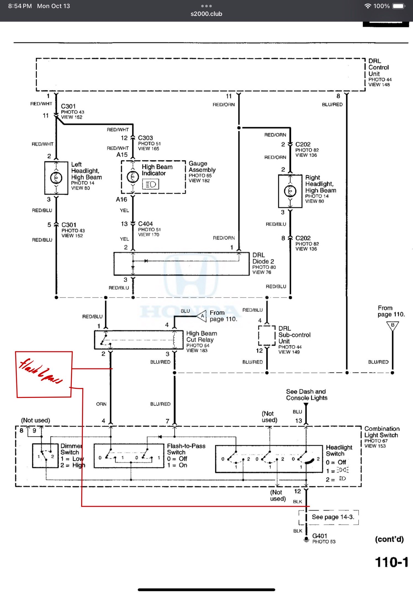
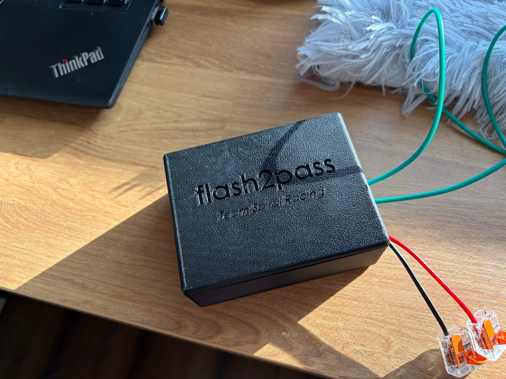

flash2pass
Table of Contents
General Intro
The flash2pass system will flash your car's headlights for you at the press of a button.
Why?
I_Am_Very_Busy_7 has a great answer on why you would want to do this:
People use them in 3 scenarios:
- To let a slower car, either in the same class or more frequently in a slower class, know that you're approaching from behind, and to give them a heads up you want to make a move.
- To do the same as above, but more adamantly and repeatedly to said slower traffic, kindly suggesting they get the fuck out of the way.
- To intimidate or distract a driver with whom you are battling for position.
For a typical trackday enthuisest, especially in lower run groups, it can be especially frustrating when you are on a flyer/hotlap and the car in front of you doesn't pay attention and give a point by fast enough, or at all. Flashing your headlights is a great way of notifying them of your presence and your intent to pass. Use case 3 is not really applicable when it comes to HPDE and should not be the intent of using this system.
How it Works
Basic Principle
This system is, in essence, rapidly pulling back on the light stalk many times a second via eletrical connection. In most cars, there are two wires running form the headlight relay to this light stalk switch and pulling it will complete the circuit, activating the relay, and thus the headlights. By adding a T-connector to these two wires, we can add in our own switch while retaining the factory light stalk functionality. Below is an example with the S2000 headlight wiring diagram.
Bypass the headlight stalk switch and add our own
System Circuitry
Now all we have to do is make this open and close really quickly at the press of a button. We can do this via an ESP32 microcontroller which is ~3 USD off Aliexpress and ~10 off Amazon. By flashing the code in the GitHub repo to the ESP32 we can get this functionality. The code will take in a button input and rapidly send a singal to one of the GPIO pins. This pin can be connected to a relay which can then be connected to the two spliced wires which will complete the functionality. Now to power the ESP32, we can do this via USB or supplying 5V directly to the board. In the case of the S2000, we can use a fuse tap on the IGN fuse to pull 12V and then use a buck converter to directly supply 5V to the board. The wiring diagram will look like the following for flash2pass.

Wiring diagram of flash2pass
Some pictures below showing the testing/WIP state using a breadboard:
Industrialization
To put it all together, this circuit can be printed on a PCB if you are fancy. But if you are just DIYing then a proto/perf board is good enough. I used the largest board from the ELEGOO 32 Pcs kit on Amazon. I clipped all of the bottom solder terminals on the bottom of the relay except for the inputs (5V, GND, SIG) to align it flush with the protoboard. For the buck converter, I just taped that down using electrical tape. For the switch, I had to cut wire and fit it thorugh the proto board. I then soldered up the the connections and 3D printed a case. If you are interested in the details, take a look at How to Build it Yourself.
You will have 3 sets of 2 wires coming out of the flash2pass system.
- Power/GND: This is where power to the system will be provided. Red for power and black for ground. In the case of the S2000 12V power is provided from the IGN slot in the fuse box. Ground is a ring terminal on the hood release bolt.
- Button Switch: This is wiring for the button to press on the system. In the picture it is the green wires.
- Light Switch: These go to the two T-tapped wires for the flash system. These are blue in this picture and direction does not matter. They will be connected to NO (normally open) and COM (common).
How to Build it Yourself
Requirements
Materials
The following are the materials you will need. I have also added the links where I purchased mine from. Most you can find on Aliexpress for way cheaper but I got some things in a rush on Amazon as I didn't want to wait a couple weeks for shipping.
- ESP32 (Aliexpress, Amazon): There are many different types of ESP32 with varying number of pins and capabilities. Any generic ESP32 can work. I have tested these on both the Aliexpress and Amazon ones with no issues.
- Wiring (Amazon): Any wiring will work but I prefer 18 AWG size for automotive work.
- Connectors (Amazon): I like this set as it will provide both the ring terminal and female spade connector needed for power to the flash2pass system.
- 5V Buck Converter (Aliexpress, Amazon): Its important that you get the 12V -> 5V 3A version as this will buck the voltage and current down to something the ESP32 can handle. Any more and it will fry the board.
- 5V Relay (Amazon): This is the kind I got for prototyping and eventually integrated into the design. There are smaller form factor ones if you want to go your own route.
- Buttons (Amazon): I got a couple as it is for another project but you only need one.
- Proto/Perf Board (Amazon): Again only one is needed but I got more for other projects.
- (Optional) T-taps/Lever Nuts (Homedepot): I had these laying around and they are helpful for prototyping but theoretically you can do everything with the connector set above. I just found a link of these on Homedepot website.
Equipment/Tools
The following items are tools/equipment you will need to make everything.
- Wire Cutters/Strippers: Just a basic tool to strip and cut wires. Even better if you can crimp with it.
- Soldering Iron: Used to "wire" everything up on the protoboard.
- 3D Printer: You can rock no case but its nice if you can have one. Some public libraries offer 3D printing services and you just pay for filament.
- Computer: Needed to flash the firmware onto the ESP32 as well as send print jobs I guess.
Building flash2pass
Flashing the Firmware
- Download VSCode if needed and then download the PlatformIO extension.
- Grab the ESP32 and plug it into your computer via a USB cable or whatever the ESP32 takes.
- Download/clone the repository on local. Load the repo onto VSCode and hopefully PlatformIO should set itself up automatically.
- Attempt to flash the firmware onto the ESP32 by pressing the
→button at the bottom of the VSCode bar. If hovered, it should sayPlatformIO: Upload. Once flashed, you can unplug it. - If that doesnt work, go to
platformio.iniand configure your COM port as needed. For me generally COM3 is my default but just try randomly until you get it. You will know you got it when you can upload code to it.
Protoboard Prep
- Grab your relay and snip all of the bottom solder points except for the three inputs (5V, GND, Input). Note that these should be opposite of the side of the output (NC, COM, NO).
- Line up your ESP32, relay, and buck converter onto the board. The pins should be able to slot in for the ESP32 and for the relay. The buck converter may have tabs making it too wide. You can snap those off and just tape it to the board.
- Cut an strip 2 sets of 2 wires. Each set should have their own color and be the same length.
Soldering
Time to solder. Order doesn't matter but make sure you leave enough rooms so your solder lines do not need to cross.
- Push the 5V power pin from the buck converter into one of the holes on the board. Solder a line connecting that pin to 5V (VIN) power on the ESP32 as well as to the 5V pin on the relay.
- Push the 5V GND pin from the buck converter into one of the holes on the board. In addition put one of the cut wires through the hole into the path. Solder a line connecting that pin to GND on the relay, GND pins on the ESP32, and the striped wire.
- Look into the code under
src/main.cpp. CheckLED_PIN's number and match that with the one on the ESP32. If it is in an inconvient spot, you can always reflash the firmware. Grab the other wire of the set and insert it on hole next to the pin. Solder a line from that wire to the GPIO pin on the ESP32. - Look into the code under
src/main.cpp. CheckBUTTON_PIN's number and match that with the one on the ESP32. If it is in an inconvient spot, you can always reflash the firmware. Solder a line from this GPIO pin to the Input on the relay.
Testing and Putting it Together
- You are going to want to test this. Plug in a USB cable into the ESP32 and press the button. You should be able to hear some rapid fire click inside the relay (assuming you have a non solid state one). You may also be able to see the debug light flash if your relay has that functionality. If you have an oscilliscope or multimeter, you can also place your pins between NC and COM and see some signal fluctuations between 0V and 5V.
- If you do not see this, something is either wrong with your wiring. Ensure that the GPIO pins match the same routes as above and that your solder lines do not happen to accidently touch one another. If a GPIO pins is wrongly mapped, you can always reflash the software with the correct pin updated in the code.
- 3D print
flash2pass_box.STEPandflash2pass_lid.STEPunder/models. Once 3D printed clean up any stary filaments and sand down if necessary. - Insert the protoboard into the box. Ensure that your ports are facing the open sided hole of the box. It will be a tight fit. I used a ruler to push down on the board. It will eventually reach the bottom on the poles and the board should line up with the bottom of the hole exposiong the IO ports.
- Take your other set of two stripped wires and insert them into NC and COM. Use an appropriately sized screwdriver to tighten them down.
- Install the case and your flash2pass system is now ready to be installed into the car!
Car Installation
- Search the internet/forums for a wiring diagram of your car's headlight switch. For S2000's I was able to find mine on S2000.club. Once you find it, locate the page for wiring towards your headlights. You should see some references to headlight switches/levels and may even see some windshield wiper stuff.
- Identify where the switch is in the circuit and note where you want to splice the wires. Take note of the colors of the wires mentioned. They aren't always 100% accurate as I found out but better than cutting and splicing 8 wires.
- Take apart your car's interior until you can locate a spot to tap into the two wires running into the light stalk switch. Cut the wires that you marked above and test them. If the headlights/highbeams flash when you tap the two wires together you got it right. If not then make sure that you are testing the side of the wires closest to the car, not the switch. If it still flash the headlight, add connectors on both side, connect them up and heat shrink. Try again until you find the headlight wires.
- Now add a 3-way connection to each of those wires. In my case I added a T-tap but the connector set should have a way to add more than one. Add the NC and COM wires into the T-tap. Order does not matter.
- Time for power. Look up on forums for your car when you can hardwire a dashcam or something. We are looking for a place to get 12V power. In the case of the S2000, all you need is a female spade connector connected to the 12V in the flash2pass. This will go directly into the IGN in the fuse box. You can use a multimeter by tapping that spot and some larget metal object. You should read ~12V on it.
- The hardwire post should also tell you where to put your ground. For S2000s that is the hood release latch bolt. You can crimp on a ring termal to the GND in the flash2pass system then add it with the hood release latch bolt.
- Now run the button switch wire somewhere comfortable for you to reach while driving. Ensure it is secure and will not move around while driving. I just have mine ducktaped to just under the dash.
- Stow away the flash2pass box somewhere under the dash and test your new system. If everything went well you should be able to use this system completely at this stage.
Impressions
I had taken this car to Weathertech Laguna Seca Raceway and had noticed it helps alot. Many drivers are focused on the track and in intermediate, using the flash2pass system got me my point bys way quicker. With this system I was able to turn more hotlaps with minimal interuptions.
If you have any questions about this system, feel free to contact me at jonathan.lo@teamspiralracing.